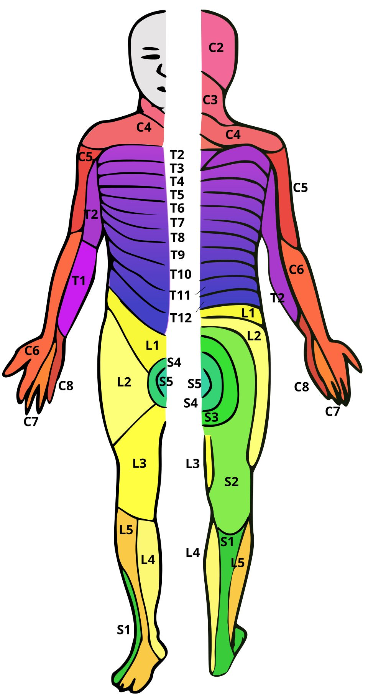

Información divulgativa. No sustituye la valoración de un profesional sanitario. Ante síntomas neurológicos bruscos (boca torcida, debilidad de un lado, dificultad para hablar) llama al 112.


Qué es
Una lesión medular es un daño de la médula espinal, el cordón de tejido nervioso que recorre el interior de la columna y conecta el cerebro con el resto del cuerpo. Interrumpe la comunicación por debajo de la lesión, y produce parálisis, pérdida de sensibilidad y alteraciones de funciones como la orina, el intestino, la sexualidad, la tensión o la respiración.
En el mundo viven con una lesión medular más de 15 millones de personas. En España se producen unos 1.000 casos nuevos al año, y conviven con ella unas 50.000 personas.
Causas
- Traumáticas (algo más de la mitad): accidentes de tráfico, caídas (la causa principal en mayores), zambullidas en aguas poco profundas (sobre todo jóvenes en verano), accidentes deportivos y laborales, agresiones.
- No traumáticas: tumores, hernias discales o artrosis que comprimen la médula, infecciones, mielitis inflamatorias (esclerosis múltiple, neuromielitis óptica), problemas vasculares, déficit de vitamina B12.
Tipos
Según el nivel de la lesión:
- Tetraplejia: lesión cervical; se afectan los brazos, el tronco y las piernas. Las más altas (C1-C4) pueden afectar a la respiración.
- Paraplejia: lesión dorsal o lumbar; se afectan el tronco y las piernas, con los brazos conservados.
Según su extensión (escala ASIA):
- Completa (ASIA A): no se conserva movimiento ni sensibilidad por debajo de la lesión, incluida la zona sacra.
- Incompleta (ASIA B-D): se conserva algo de sensibilidad o de movimiento. El pronóstico de recuperación es mucho mejor.
Síntomas y consecuencias
- Parálisis y pérdida de sensibilidad por debajo de la lesión.
- Vejiga e intestino neurógenos: pérdida del control de la orina y de las heces, que requiere programas de sondaje y evacuación.
- Disfunción sexual y de la fertilidad.
- Espasticidad y espasmos.
- Dolor neuropático, muy frecuente.
- Disreflexia autonómica en lesiones por encima de D6: una subida brusca y peligrosa de la tensión, con dolor de cabeza y sudoración, desencadenada por un estímulo por debajo de la lesión (vejiga llena, estreñimiento, una herida). Es una urgencia.
- Hipotensión al incorporarse, problemas de regulación de la temperatura.
- Úlceras por presión, trombosis, osteoporosis, infecciones urinarias y respiratorias.
Atención inicial
Ante un accidente con posible lesión de la columna, no mover al herido salvo peligro inmediato y llamar al 112. Los servicios de emergencias inmovilizan la columna. En el hospital:
- Se hace una TC y una resonancia.
- Se mantiene una buena tensión arterial y oxigenación para proteger la médula.
- Cirugía para descomprimir la médula y estabilizar la columna, idealmente en las primeras 24 horas.
Rehabilitación
La neurorrehabilitación en unidades especializadas es fundamental. En España, el Hospital Nacional de Parapléjicos de Toledo es un centro de referencia desde 1974. Incluye fisioterapia, terapia ocupacional, entrenamiento en silla de ruedas, aprendizaje del manejo de la vejiga y el intestino, sexualidad, apoyo psicológico y reinserción social y laboral. Muchas personas con lesión medular trabajan, conducen vehículos adaptados, practican deporte y tienen hijos.
Avances e investigación
- Estimulación eléctrica de la médula: en 2018 y 2023, equipos de Suiza y de EE. UU. lograron que personas con paraplejia volvieran a dar pasos con un estimulador epidural programado, y en 2023 se conectó con un implante cerebral (un «puente digital») para controlar el movimiento con el pensamiento. Ver interfaces cerebro-ordenador.
- Estimulación transcutánea de la médula, que en 2024 mejoró la función de manos y brazos en lesiones cervicales.
- Exoesqueletos robóticos.
- Terapias celulares y fármacos neuroprotectores, aún en investigación.
Historia · Medicapedia
La historia de esta enfermedad
Cómo se describió, quién la estudió y cómo ha cambiado su tratamiento a lo largo de los siglos, en Medicapedia, nuestra enciclopedia hermana de historia de la medicina.
Fuentes
- Ahuja CS, et al. Traumatic spinal cord injury. Nat Rev Dis Primers. 2017;3:17018.
- Fehlings MG, et al. A clinical practice guideline for the management of acute spinal cord injury. Global Spine J. 2017;7:84S-94S.
- Lorach H, et al. Walking naturally after spinal cord injury using a brain-spine interface. Nature. 2023;618:126-33.
- Moritz C, et al. Non-invasive spinal cord electrical stimulation for arm and hand function in chronic tetraplegia. Nat Med. 2024;30:1276-83.
- OMS. Lesiones de la médula espinal.